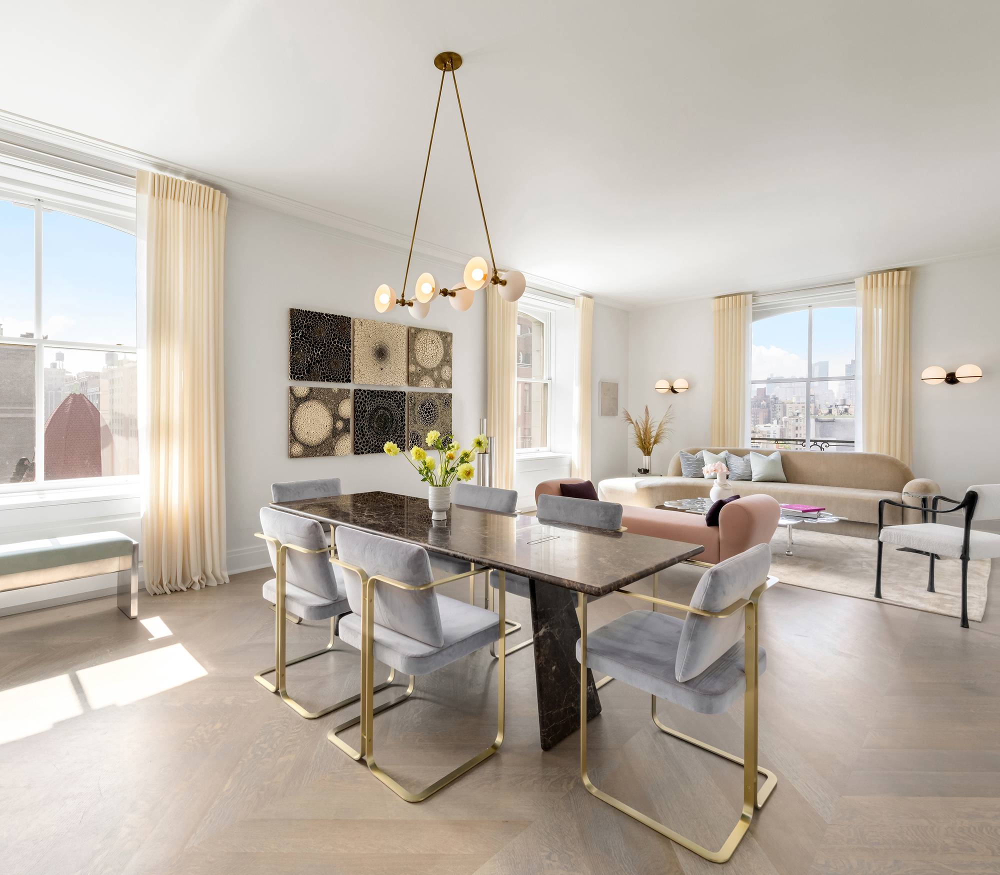
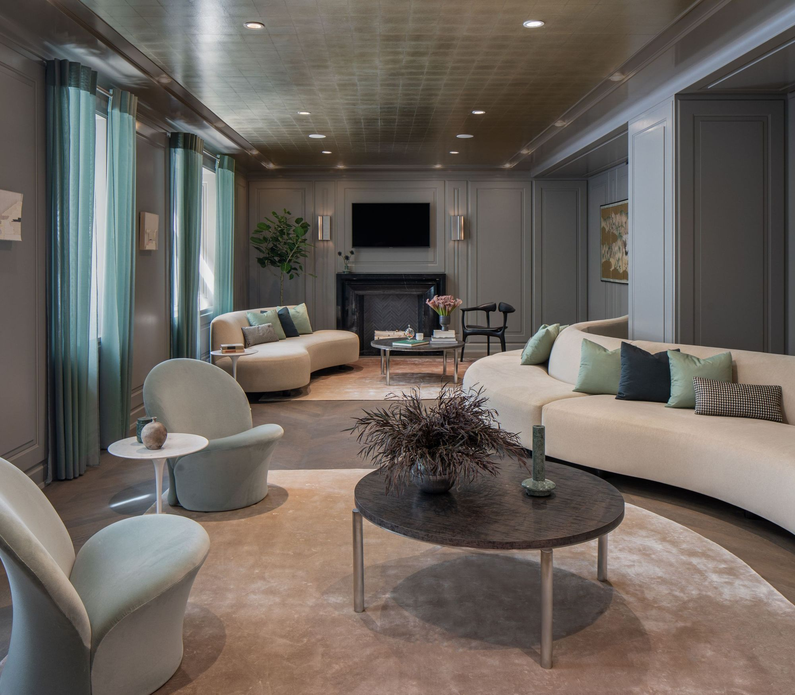

SCROLL
Arrival
The grandest of the Upper West Side apartment houses, palatial, beautifully proportioned, the Belnord is as clean, ageless and modern as its limestone sisters elsewhere in Manhattan. It retains its special distinction as a cosseting, private haven in the midst of its vibrant, lively Upper West Side neighborhood. With six distinct residential lobbies, each offering three means of entrance to each residence, — a private residential elevator, a grand, open staircase, and a private freight lift — the Belnord feels as cloistered as it does noble.

Residences
With most floors entries sharing only one other apartment and multiple entrances to many units, The Belnord offers true exclusivity and privacy. Original apartment layouts — most floor-through, except in the dramatic corner residences — have been completely reinvented, opened up to allow easy appreciation of the building’s dramatic breadth, scale, and volume. The visionary Robert A.M. Stern Architect’s acute understanding of classic layouts and contemporary interiors has allowed those original floor plans to be both respected and completely rethought to meet the needs of the modern homeowner.

Belnord Club
The Belnord Club is both an idea a physical place. The idea is to offer the highest possible level of attentiveness and service, as well as amenities discerning home buyers have come to expect. Concierge desks in both lobbies are manned with staff eager to help and enhance your experience, both within the building’s walls and outside them. The Belnord concierge team goes beyond the expected.
Neighborhood
The Upper West Side is a cultural cornucopia, as well as one of New York’s most refined and elegant residential neighborhoods. It is sought after not only for its unique access to Manhattan’s two largest parks—Central Park and Riverside Park—but for its diverse and significant architecture. Its large landmarks include the performance showcases of Lincoln Center and The American Museum of Natural History, with its Rose Center for Earth and Space, and The New York Historical Society. But it is equally blessed with innovative restaurants and an extensive array of stores, ranging from glamorous boutiques to independent specialty shops.
Conservators
Behind the Belnord is an extraordinary team of deeply experienced and highly creative all-stars in the fields of real estate development and design, all working at the peak of their powers to create an extraordinary experience in living within this unique masterpiece of urban architecture. Each is leader in her or his field. We are proud to introduce them to you: